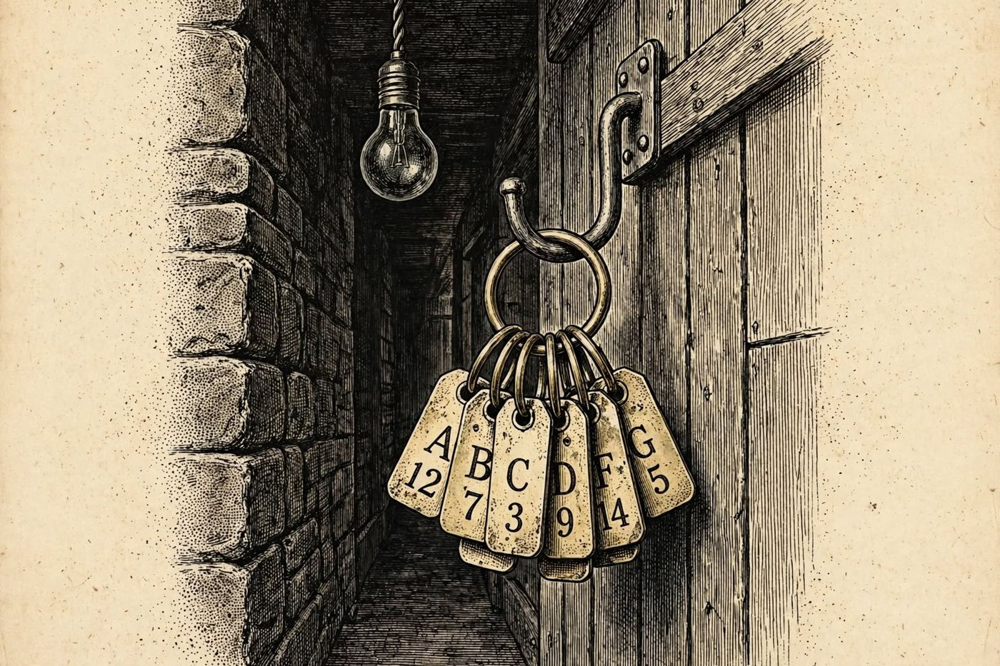

4 de diciembre
El plano de servicio del hotel
Libro · págs. 18-21
Audio del día
Transcripción
«Camine despacio y no toque los muros. Las paredes de madera del Altaneve tienen oídos. Hay un segundo hotel dentro de este edificio: los pasillos de servicio por los que nos movemos las camareras y los limpiadores. Si el asesino cruzó la casa sin cruzarse con un solo huésped en el vestíbulo o la biblioteca, tuvo que usar estas puertas numeradas. Siga el plano que le he dibujado... y recuerde que la escalera norte está cerrada por derrumbe.»

Intenta resolverlo primero. Abre solo lo que necesites, en este orden.
1Pista sutil
Del Bar Edelweiss solo puedes salir por la puerta oculta de la barra (S-4) hacia el Office, ya que el vestíbulo (V-0) está prohibido. Desde el Office, no puedes ir a la cocina porque te llevaría a zonas prohibidas o cerradas; debes dirigirte a la lavandería.
2Comprobación parcial
Las tres primeras placas del recorrido son S-4, O-6 y M-5.
3Pista fuerte
Del office salen dos caminos: a la cocina y a la lavandería. La cocina lleva al comedor (prohibido), a la bodega (sin salida) y a la escalera norte (cerrada). Por tanto, hay que ir por la lavandería, y de ahí, a la escalera este.
4Solución oficialSpoiler si no lo has intentado
Ruta completa:
Bar → Office: S-4
Office → Lavandería: O-6
Lavandería → Pie escalera este: M-5
Pie escalera este → Rellano 2.ª planta: B-1
Rellano → Pasillo servicio 2.ª planta: R-8
Pasillo servicio → Ala Este: A-9
Para el desenlace de la historia, vuelve al libro: la sección de soluciones está al final.